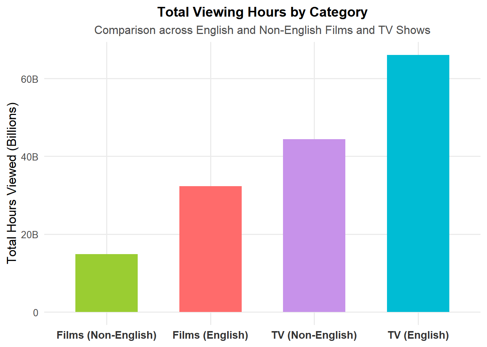

if(!dir.exists(file.path("data", "mp01"))){
dir.create(file.path("data", "mp01"), showWarnings=FALSE, recursive=TRUE)
}
GLOBAL_TOP_10_FILENAME <- file.path("data", "mp01", "global_top10_alltime.csv")
if(!file.exists(GLOBAL_TOP_10_FILENAME)){
download.file("https://www.netflix.com/tudum/top10/data/all-weeks-global.tsv",
destfile=GLOBAL_TOP_10_FILENAME)
}
COUNTRY_TOP_10_FILENAME <- file.path("data", "mp01", "country_top10_alltime.csv")
if(!file.exists(COUNTRY_TOP_10_FILENAME)){
download.file("https://www.netflix.com/tudum/top10/data/all-weeks-countries.tsv",
destfile=COUNTRY_TOP_10_FILENAME)
}Mini Project #01: Gourmet Cheeseburgers Across the Globe
Acquire Data
Data Import and Preparation
GLOBAL_TOP_10 <- read_tsv(GLOBAL_TOP_10_FILENAME)Rows: 8840 Columns: 9
── Column specification ────────────────────────────────────────────────────────
Delimiter: "\t"
chr (3): category, show_title, season_title
dbl (5): weekly_rank, weekly_hours_viewed, runtime, weekly_views, cumulativ...
date (1): week
ℹ Use `spec()` to retrieve the full column specification for this data.
ℹ Specify the column types or set `show_col_types = FALSE` to quiet this message.glimpse(GLOBAL_TOP_10)Rows: 8,840
Columns: 9
$ week <date> 2025-09-21, 2025-09-21, 2025-09-21, 2025-0…
$ category <chr> "Films (English)", "Films (English)", "Film…
$ weekly_rank <dbl> 1, 2, 3, 4, 5, 6, 7, 8, 9, 10, 1, 2, 3, 4, …
$ show_title <chr> "The Wrong Paris", "KPop Demon Hunters", "I…
$ season_title <chr> "N/A", "N/A", "N/A", "aka Charlie Sheen: Se…
$ weekly_hours_viewed <dbl> 38900000, 35400000, 14400000, 21800000, 109…
$ runtime <dbl> 1.7833, 1.6667, 1.8833, 3.0333, 1.7000, 1.5…
$ weekly_views <dbl> 21800000, 21200000, 7600000, 7200000, 64000…
$ cumulative_weeks_in_top_10 <dbl> 2, 14, 1, 2, 2, 4, 4, 1, 1, 1, 1, 2, 5, 1, …Treat N/A values in season_title
GLOBAL_TOP_10 <- GLOBAL_TOP_10 |>
mutate(season_title = if_else(season_title == "N/A", NA_character_, season_title))
glimpse(GLOBAL_TOP_10)Rows: 8,840
Columns: 9
$ week <date> 2025-09-21, 2025-09-21, 2025-09-21, 2025-0…
$ category <chr> "Films (English)", "Films (English)", "Film…
$ weekly_rank <dbl> 1, 2, 3, 4, 5, 6, 7, 8, 9, 10, 1, 2, 3, 4, …
$ show_title <chr> "The Wrong Paris", "KPop Demon Hunters", "I…
$ season_title <chr> NA, NA, NA, "aka Charlie Sheen: Season 1", …
$ weekly_hours_viewed <dbl> 38900000, 35400000, 14400000, 21800000, 109…
$ runtime <dbl> 1.7833, 1.6667, 1.8833, 3.0333, 1.7000, 1.5…
$ weekly_views <dbl> 21800000, 21200000, 7600000, 7200000, 64000…
$ cumulative_weeks_in_top_10 <dbl> 2, 14, 1, 2, 2, 4, 4, 1, 1, 1, 1, 2, 5, 1, …Read country-level data, treating “N/A” as NA
COUNTRY_TOP_10 <- read_tsv(COUNTRY_TOP_10_FILENAME, na = "N/A")Rows: 411760 Columns: 8
── Column specification ────────────────────────────────────────────────────────
Delimiter: "\t"
chr (5): country_name, country_iso2, category, show_title, season_title
dbl (2): weekly_rank, cumulative_weeks_in_top_10
date (1): week
ℹ Use `spec()` to retrieve the full column specification for this data.
ℹ Specify the column types or set `show_col_types = FALSE` to quiet this message.glimpse(COUNTRY_TOP_10)Rows: 411,760
Columns: 8
$ country_name <chr> "Argentina", "Argentina", "Argentina", "Arg…
$ country_iso2 <chr> "AR", "AR", "AR", "AR", "AR", "AR", "AR", "…
$ week <date> 2025-09-21, 2025-09-21, 2025-09-21, 2025-0…
$ category <chr> "Films", "Films", "Films", "Films", "Films"…
$ weekly_rank <dbl> 1, 2, 3, 4, 5, 6, 7, 8, 9, 10, 1, 2, 3, 4, …
$ show_title <chr> "The Mule", "The Wrong Paris", "KPop Demon …
$ season_title <chr> NA, NA, NA, NA, NA, NA, NA, NA, NA, NA, "Ma…
$ cumulative_weeks_in_top_10 <dbl> 1, 2, 14, 1, 1, 1, 2, 1, 5, 1, 2, 1, 7, 1, …Initial Data Exploration
library(DT)
GLOBAL_TOP_10 |>
head(n=20) |>
datatable(options=list(searching=FALSE, info=FALSE))Formating Column names and Large numbers
library(stringr)
format_titles <- function(df){
colnames(df) <- str_replace_all(colnames(df), "_", " ") |> str_to_title()
df
}
GLOBAL_TOP_10 |>
format_titles() |>
head(n=20) |>
datatable(options=list(searching=FALSE, info=FALSE)) |>
formatRound(c('Weekly Hours Viewed', 'Weekly Views'))Remove unnecessary Columns
GLOBAL_TOP_10 |>
select(-season_title) |>
format_titles() |>
head(n=20) |>
datatable(options=list(searching=FALSE, info=FALSE)) |>
formatRound(c('Weekly Hours Viewed', 'Weekly Views'))Showing runtime in minutes
GLOBAL_TOP_10 |>
mutate(`runtime_(minutes)` = round(60 * runtime)) |>
select(-season_title,
-runtime) |>
format_titles() |>
head(n=20) |>
datatable(options=list(searching=FALSE, info=FALSE)) |>
formatRound(c('Weekly Hours Viewed', 'Weekly Views'))Exploratory Data Analysis
Show code
# How many different countries does Netflix operate in?
n_countries <- COUNTRY_TOP_10 |>
distinct(country_name) |>
nrow()Netflix operates in 94 different countries according to the viewing history.
Show code
# Which non-English-language film has spent the most cumulative weeks in the global top 10? How many weeks did it spend?
top_noneng_film <- GLOBAL_TOP_10 |>
filter(category == "Films (Non-English)") |>
group_by(show_title) |>
summarise(cum_weeks = n(), .groups = "drop") |>
arrange(desc(cum_weeks)) |>
slice(1)
film_name_q2 <- top_noneng_film$show_title
weeks_q2 <- top_noneng_film$cum_weeksThe non-English film with the longest global Top 10 run is All Quiet on the Western Front, with 23 weeks.
Show code
# What is the longest film (English or non-English) to have ever appeared in the Netflix global Top 10? How long is it in minutes?
longest_film <- GLOBAL_TOP_10 |>
filter(str_detect(category, "^Films")) |>
filter(!is.na(runtime)) |>
mutate(runtime_minutes = round(60 * runtime)) |>
arrange(desc(runtime_minutes)) |>
slice(1)
film_name_q3 <- longest_film$show_title
runtime_q3 <- longest_film$runtime_minutesThe longest film is Pushpa 2: The Rule (Reloaded Version) at 224 minutes.
Programs with the most total hours of global viewership:
Show code
# For each of the four categories, what program has the most total hours of global viewership?
library(DT)
top_by_category <- GLOBAL_TOP_10 |>
mutate(program = if_else(str_detect(category, "^TV"),
paste0(show_title,
if_else(is.na(season_title), "", paste0(" — ", season_title))),
show_title)) |>
group_by(category, program) |>
summarise(total_hours = sum(weekly_hours_viewed, na.rm = TRUE), .groups = "drop") |>
arrange(category, desc(total_hours)) |>
group_by(category) |>
slice(1) |>
ungroup()
datatable(top_by_category,
options = list(pageLength = 5, searching = FALSE, info = FALSE)) |>
formatRound("total_hours", 0)Show code
#Which TV show had the longest run in a country’s Top 10? How long was this run and in what country did it occur?
longest_tv_run <- COUNTRY_TOP_10 |>
filter(str_detect(category, "^TV")) |>
arrange(country_name, show_title, season_title, week) |>
group_by(country_name, show_title, season_title) |>
mutate(gap_weeks = as.numeric(week - lag(week), units = "days") / 7,
new_block = if_else(is.na(gap_weeks) | gap_weeks != 1, 1L, 0L),
block_id = cumsum(new_block)) |>
group_by(country_name, show_title, season_title, block_id, .add = TRUE) |>
summarise(streak_weeks = n(), .groups = "drop") |>
arrange(desc(streak_weeks)) |>
slice(1)
show_q5 <- longest_tv_run$show_title
season_q5 <- longest_tv_run$season_title
country_q5 <- longest_tv_run$country_name
weeks_q5 <- longest_tv_run$streak_weeksThe longest TV run is Pablo Escobar, el patrón del mal (Pablo Escobar, el patrón del mal: Season 1) with 102 weeks in Colombia.
Show code
# Netflix provides over 200 weeks of service history for all but one country in our data set. Which country is this and when did Netflix cease operations in that country?
weeks_by_country <- COUNTRY_TOP_10 |>
group_by(country_name) |>
summarise(n_weeks = n_distinct(week), last_week = max(week), .groups = "drop") |>
arrange(n_weeks)
exception_country <- weeks_by_country |> slice(1)
country_q6 <- exception_country$country_name
nweeks_q6 <- exception_country$n_weeks
lastweek_q6 <- exception_country$last_weekRussia has only 35 weeks of history, ceasing by 2022-02-27.
Show code
# What is the total viewership of the TV show Squid Game?
squid_total_hours <- GLOBAL_TOP_10 |>
filter(str_to_lower(show_title) == "squid game") |>
summarise(total_hours = sum(weekly_hours_viewed, na.rm = TRUE)) |>
pull(total_hours)Squid Game has been watched for over 5,048,300,000 hours globally.
Show code
# The movie Red Notice has a runtime of 1 hour and 58 minutes. Approximately how many views did it receive in 2021?
library(lubridate)
runtime_hours <- 118/60
red_notice_views_2021 <- GLOBAL_TOP_10 |>
filter(show_title == "Red Notice", year(week) == 2021) |>
summarise(total_hours_2021 = sum(weekly_hours_viewed, na.rm = TRUE)) |>
mutate(approx_views_2021 = total_hours_2021 / runtime_hours)
views_q8 <- round(red_notice_views_2021$approx_views_2021)Red Notice had approximately 201,732,203 views in 2021.
Show code
# How many Films reached Number 1 in the US but did not originally debut there? That is, find films that first appeared on the Top 10 chart at, e.g., Number 4 but then became more popular and eventually hit Number 1? What is the most recent film to pull this off?
us_films <- COUNTRY_TOP_10 |>
mutate(week = as.Date(week)) |>
filter(country_name == "United States", str_detect(category, "^Films"))
us_debut_and_peak <- us_films |>
arrange(show_title, week) |>
group_by(show_title) |>
summarise(debut_week = min(week),
debut_rank = weekly_rank[which.min(week)],
ever_num1 = any(weekly_rank == 1),
first_num1_week = ifelse(any(weekly_rank == 1),
min(week[weekly_rank == 1]),
as.Date(NA)),
.groups = "drop") |>
filter(ever_num1, debut_rank != 1)
n_films_us_not_debut1 <- nrow(us_debut_and_peak)
most_recent_us <- us_debut_and_peak |>
arrange(desc(first_num1_week)) |>
slice(1)
film_q9 <- most_recent_us$show_title
week_q9 <- most_recent_us$first_num1_week
debut_q9 <- most_recent_us$debut_rank45 films reached #1 in the US after debuting below #1.
The most recent was Unknown Number: The High School Catfish on the week of 2025-09-07.
Show code
# Which TV show/season hit the top 10 in the most countries in its debut week? In how many countries did it chart?
debut_spread <- COUNTRY_TOP_10 |>
filter(str_detect(category, "^TV")) |>
group_by(show_title, season_title) |>
summarise(debut_week = min(week), .groups = "drop") |>
inner_join(COUNTRY_TOP_10, by = c("show_title", "season_title", "debut_week" = "week")) |>
filter(str_detect(category, "^TV")) |>
group_by(show_title, season_title, debut_week) |>
summarise(n_countries = n_distinct(country_name), .groups = "drop") |>
arrange(desc(n_countries)) |>
slice(1)
show_q10 <- debut_spread$show_title
season_q10 <- debut_spread$season_title
ncountries_q10 <- debut_spread$n_countries
week_q10 <- debut_spread$debut_weekEmily in Paris (Emily in Paris: Season 2) charted in 94 countries in its debut week (2021-12-26).
Press Releases
Stranger Things Dominates Global Screens Ahead of Final Season
Show code
library(dplyr)
library(stringr)
# Filter Stranger Things rows and make sure week is Date
st_global <- GLOBAL_TOP_10 |>
filter(str_detect(show_title, "Stranger Things")) |>
mutate(week = as.Date(week))
# 1. Total viewing hours
stranger_hours <- st_global |>
summarise(total_hours = sum(weekly_hours_viewed, na.rm = TRUE)) |>
pull(total_hours)
# 2. Distinct weeks in Global Top 10
stranger_weeks <- st_global |>
summarise(total_weeks = n_distinct(week)) |>
pull(total_weeks)
# 3. Distinct countries (using COUNTRY_TOP_10)
stranger_countries <- COUNTRY_TOP_10 |>
filter(str_detect(show_title, "Stranger Things")) |>
summarise(n_countries = n_distinct(country_name)) |>
pull(n_countries)
# 4. Peak weekly hours and date
st_peak_row <- st_global |>
slice_max(weekly_hours_viewed, n = 1, with_ties = FALSE)
stranger_peak_hours <- st_peak_row$weekly_hours_viewed
stranger_peak_week <- st_peak_row$week
# 5. Weeks at #1 globally
stranger_weeks_num1 <- st_global |>
summarise(num1_weeks = n_distinct(week[weekly_rank == 1])) |>
pull(num1_weeks)
# 6. Number of distinct seasons in dataset
stranger_seasons <- st_global |>
summarise(n_seasons = n_distinct(season_title, na.rm = TRUE)) |>
pull(n_seasons)
# 7. Best rank achieved
stranger_best_rank <- st_global |>
summarise(best_rank = min(weekly_rank, na.rm = TRUE)) |>
pull(best_rank)As Netflix prepares for the much-anticipated release of Stranger Things season 5 in late 2025, the franchise’s legacy already speaks for itself. Across all four previous seasons, audiences have logged more than 2,967,980,000 hours of viewing globally. The series has demonstrated remarkable staying power, holding a position in the Global Top 10 for 20 weeks and reaching viewers in over 93 countries.
At its peak, Stranger Things attracted over 335,010,000 viewing hours in a single week (the week of 2022-06-05), underscoring its event-level popularity. It has spent 7 weeks at the #1 spot globally and consistently ranked within the Top 10 across 3 different seasons, with its best debut rank reaching #1.
What sets Stranger Things apart is not just its nostalgic 80s aesthetic or supernatural plotlines, but its ability to resonate with a broad international audience while competing head-to-head with other flagship Netflix series. Compared to major hits like The Witcher and Wednesday, Stranger Things stands out as a cultural phenomenon that has transcended borders and languages. With Hawkins’ last stand approaching, Netflix is positioning season 5 as one of the defining entertainment events of the decade, ensuring the series leaves behind both a commercial and cultural legacy.
Hindi-Language Originals Propel Netflix Growth in India
Show code
library(dplyr)
library(stringr)
# Step 1: Titles that ranked in India (likely Hindi Originals)
hindi_india <- COUNTRY_TOP_10 |>
filter(country_name == "India", str_detect(category, "Films|TV")) |>
mutate(week = as.Date(week))
# List the most common titles (to help pick Hindi Originals)
top_hindi_titles <- hindi_india |>
count(show_title, sort = TRUE)
# Step 2: Use GLOBAL_TOP_10 for hours
hindi_global <- GLOBAL_TOP_10 |>
filter(show_title %in% top_hindi_titles$show_title) |>
mutate(week = as.Date(week))
# Total global hours for those titles
hindi_hours <- hindi_global |>
summarise(total_hours = sum(weekly_hours_viewed, na.rm = TRUE)) |>
pull(total_hours)
# Number of distinct titles
hindi_titles <- n_distinct(hindi_global$show_title)
# Distinct weeks they appeared in India Top 10
hindi_weeks <- hindi_india |>
filter(show_title %in% top_hindi_titles$show_title) |>
summarise(total_weeks = n_distinct(week)) |>
pull(total_weeks)
# Peak global week among Hindi titles
hindi_peak <- hindi_global |>
slice_max(weekly_hours_viewed, n = 1, with_ties = FALSE)
hindi_peak_title <- hindi_peak$show_title
hindi_peak_hours <- hindi_peak$weekly_hours_viewed
hindi_peak_week <- hindi_peak$weekNetflix’s growth in India has been fueled by a steadily expanding slate of Hindi-language Originals that deeply resonate with local audiences and increasingly travel well outside the subcontinent. These productions — ranging from prestige dramas to mass-appeal films — have collectively generated over 104,466,500,000 hours of global viewing time, underscoring their growing role in Netflix’s international portfolio.
Within India itself, 879 distinct shows and films have broken into the weekly Top 10 rankings, holding their place on the charts for a combined 221 weeks. This breadth of programming demonstrates not only the platform’s commitment to diverse storytelling in Hindi, but also the strong appetite among Indian viewers for homegrown content.
Among these successes, the standout has been Squid Game, which achieved a peak of more than 571,760,000 hours of global viewing in the week of 2021-10-03. That performance highlights the ability of a single Hindi Original to capture attention on a worldwide scale, further validating Netflix’s strategy of investing in high-quality, locally rooted stories that speak to both domestic and global audiences.
Films vs TV Shows: A Tale of Two Formats on Netflix
Show code
library(dplyr)
# Ensure week is Date
global_data <- GLOBAL_TOP_10 |> mutate(week = as.Date(week))
# Aggregate by category
category_summary <- global_data |>
group_by(category) |>
summarise(
total_hours = sum(weekly_hours_viewed, na.rm = TRUE),
total_titles = n_distinct(show_title),
total_weeks = n_distinct(week),
.groups = "drop"
)
# Extract Films vs TV numbers
film_hours <- category_summary$total_hours[category_summary$category == "Films (English)"]
tv_hours <- category_summary$total_hours[category_summary$category == "TV (English)"]
film_titles <- category_summary$total_titles[category_summary$category == "Films (English)"]
tv_titles <- category_summary$total_titles[category_summary$category == "TV (English)"]
film_weeks <- category_summary$total_weeks[category_summary$category == "Films (English)"]
tv_weeks <- category_summary$total_weeks[category_summary$category == "TV (English)"]
# Biggest single title in Films
film_peak <- global_data |>
filter(str_detect(category, "^Films")) |>
group_by(show_title) |>
summarise(total_hours = sum(weekly_hours_viewed, na.rm = TRUE), .groups = "drop") |>
slice_max(total_hours, n = 1)
# Biggest single title in TV
tv_peak <- global_data |>
filter(str_detect(category, "^TV")) |>
group_by(show_title) |>
summarise(total_hours = sum(weekly_hours_viewed, na.rm = TRUE), .groups = "drop") |>
slice_max(total_hours, n = 1)Netflix’s viewing data reveals two distinct but powerful consumption patterns: Films have generated over 32,365,620,000 hours globally across 912 titles and 221 weeks on the charts. Leading the way is KPop Demon Hunters, which drew the most cumulative viewing hours among films.
On the other hand, TV shows continue to dominate in overall engagement, with more than 66,060,030,000 hours watched across 512 titles and 221 weeks in the Top 10. The clear standout is Squid Game, which reigns as the single most-watched series.
This comparison underscores Netflix’s unique ability to succeed in both formats: films drive event-level spikes in viewership, while series sustain long-term audience engagement across multiple weeks and seasons. Together, they illustrate Netflix’s dual role as both a global box-office replacement and a traditional TV disruptor.

Show code
library(ggplot2)
library(scales)
library(dplyr)
# Top 10 globally most-watched TV titles (any language)
top_tv_titles <- GLOBAL_TOP_10 |>
filter(str_detect(category, "^TV")) |>
group_by(show_title) |>
summarise(total_hours = sum(weekly_hours_viewed, na.rm = TRUE), .groups = "drop") |>
slice_max(total_hours, n = 10) |>
arrange(total_hours)
ggplot(top_tv_titles, aes(x = reorder(show_title, total_hours), y = total_hours)) +
geom_col(fill = "#00bcd4") +
coord_flip() +
scale_y_continuous(labels = label_number(scale_cut = cut_short_scale())) +
labs(
title = "Top 10 Most-Watched Netflix TV Series (Global)",
subtitle = "‘Squid Game’ stands far above other series by total hours viewed",
x = NULL,
y = "Total Hours Viewed (Billions)"
) +
theme_minimal(base_size = 13) +
theme(
plot.title = element_text(face = "bold", size = 14, hjust = 0.5),
plot.subtitle = element_text(size = 12, hjust = 0.5, color = "gray40"),
axis.text.x = element_text(size = 10, color = "gray30"),
axis.text.y = element_text(face = "bold", size = 10, color = "gray20")
)